Training Mario with reinforcement learning
On a lovely day, I asked myself: how can I make a computer learn to play Mario? Well, I did just that — and went on the journey to understand reinforcement learning (RL) better. This plate documents my experiments training an AI agent to play Super Mario Bros using a Double Deep Q-Network (DDQN).
What is reinforcement learning?
Reinforcement learning is a type of machine learning where an agent learns by interacting with its environment to achieve a specific goal. The agent takes actions and receives rewards or penalties based on the effectiveness of those actions. Over time, the agent uses this feedback to adjust its behaviour, aiming to maximise cumulative rewards.
RL is commonly used in gaming, robotics, finance — anywhere sequential decision-making under uncertainty is required. For example, an RL agent can learn to play video games by trying different strategies and learning from the outcomes. A famous example is AlphaGo, which used RL to beat world champions at Go. Other notable agents: AlphaStar in StarCraft and OpenAI Five in Dota 2 at superhuman levels.
In Mario's case, the agent's actions are moving left or right, jumping, or shooting fireballs.
The basic elements of reinforcement learning:
- Agent — the learner / decision-maker that interacts with the environment.
- Environment — the setting in which the agent operates.
- Action — choices the agent can make.
- State — the current situation or context in which the agent finds itself.
- Reward — feedback given to the agent to indicate success or failure.
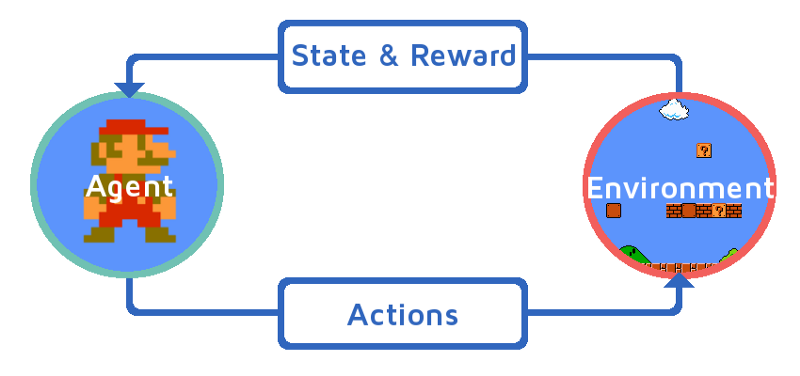
"For any given state, an agent can choose to do the most optimal action (exploit) or a random action (explore)." Learning to make this trade-off is a key challenge in reinforcement learning.
Core concepts

Imagine you're playing a video game. You are the agent (the character you control), and the environment is the game world (the levels, obstacles, everything around you). You can see things happening in the game (a monster coming toward you) and decide what to do next (jump, run, fight back).
States and observations
The state is a snapshot of everything in the game world at a specific moment: where the monsters are, what items are around, how much health you have. Observations are what the agent can see or know about the world. Sometimes you can see everything (a game with a whole-map view), and sometimes you can only see part of it (you're inside a building and can't see outside). So the state is the complete picture (fully observed if the agent sees the state) while the agent often only sees part of it.
Action space
Action space is the set of all possible things you can do. For example: "jump", "run", or "attack".
In some environments — Atari games, Go — the agent operates within discrete action spaces: a limited number of possible actions. Other environments, like a robot in a physical world, have continuous action spaces, where actions are real-valued vectors.
Policies
A policy is a set of rules — a plan — that tells the agent what to do based on what it sees. If you see a monster, your policy might say to jump; if it's attacking, fight back; if you see treasure, collect it.
Since the policy acts as the agent's brain, the terms "policy" and "agent" are often used interchangeably. "The policy aims to maximise the reward."
In deep RL we use parameterised policies — functions whose outputs depend on a set of parameters (e.g. the weights and biases of a neural network). Adjusting these parameters through optimisation algorithms changes the behaviour of the policy.
A policy can be deterministic or stochastic.
Trajectories
A trajectory is a sequence of states and actions in the world — the path the agent takes through the game. It's the story of what you do. Trajectories are also called episodes or rollouts.
Rewards
The goal of RL is for the agent to get better by practicing and learning from what happens when it takes different actions. The agent gets rewards for good actions and tries to do more of those to maximise its total reward.
The reward function, written as R, tells the agent how good or bad an action was. It depends on where the agent was (the state), what action it just took (move, jump, grab), and where it ended up (the next state). So: R = R(s, a, s'). Sometimes it's simpler to look only at the current state (or the state plus the action).
The agent doesn't just care about the reward from one action — it cares about getting the most points over time. This total over a period is called the return, written as R(τ). Two flavours:
- Finite-Horizon Undiscounted Return. Sum all the points you get in a short level or time period.
- Infinite-Horizon Discounted Return. Look at all rewards the agent ever gets (an infinite horizon), but use a discount factor (
γ) to make future rewards worth a bit less.
Prioritise short-term gains (like grabbing a treasure) but still consider discounted long-term rewards (factoring in future treasures after defeating a monster). The discount factor also makes the math easier. For each decision, the agent calculates a value estimate based on both immediate rewards and discounted future rewards.
Initial setup
This plate follows the instructions from this PyTorch tutorial. Discussion and modifications that follow are my attempt to make sense of the article and the code.
Setting up the environment was quite the adventure. If you've worked with Python packages before, you know the usual suspects — version conflicts, deprecation warnings, the occasional "this doesn't work like it used to" moment.
- Outdated components.
- Compatibility issues because some functions are deprecated.
- Getting the right combination of dependency versions.
After a few hours of debugging and package juggling, I finally got everything working together.
Listing all dependencies would be overkill — here are the main ones:
pytorch=2.4.1=py3.8_cuda12.4_cudnn9_0
torchrl=0.5.0
torchvision=0.20.0
gym=0.26.1
gym-super-mario-bros=7.4.0
numpy=1.24.4
matplotlib-base=3.7.3I used CUDA and cuDNN for GPU acceleration. For the right versions, check this Stack Overflow answer, the official PyTorch site, or use miniconda's conda-forge channel for up-to-date packages. Once the versions line up, it looks like this:
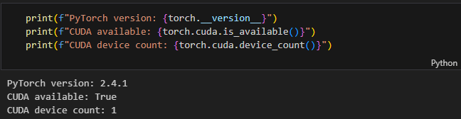
Initialise the environment
In Mario, tubes, mushrooms, and the rest are components of the environment. This is where the agent interacts with the world, taking actions and receiving rewards based on its performance.
# Initialise Super Mario environment
# (in v0.26 change render mode to 'human' to see results on the screen)
if gym.__version__ < '0.26':
env = gym_super_mario_bros.make("SuperMarioBros-1-1-v0", new_step_api=True)
else:
env = gym_super_mario_bros.make("SuperMarioBros-1-1-v0", render_mode='rgb', apply_api_compatibility=True)
# Define the movement options for Super Mario
MOVEMENT_OPTIONS = [
["right"], # Move right
["right", "A"], # Jump right
]
# Apply the wrapper to the environment
env = JoypadSpace(env, MOVEMENT_OPTIONS)
env.reset()
next_state, reward, done, trunc, info = env.step(action=0)
print(f"{next_state.shape},\n {reward},\n {done},\n {info}")This snippet initialises the Super Mario environment, sets up the movement options, and applies a wrapper that lets the agent interact with the environment via a set of available actions. As a test, the code prints the next state, reward, done flag, and info after taking the first action.
(240, 256, 3),
0.0,
False,
{'coins': 0, 'flag_get': False, 'life': 2, 'score': 0, 'stage': 1,
'status': 'small', 'time': 400, 'world': 1, 'x_pos': 40, 'y_pos': 79}When you call env.step(action=0), you're telling Mario to perform action 0 — which from the MOVEMENT_OPTIONS list is "move right". You can change to action 1, which is "jump right". The function returns the next state (a 240×256×3 image), the reward (0.0), a done flag (False — episode not over), and some additional info about the environment.
This is something like what Mario will see (for illustration):
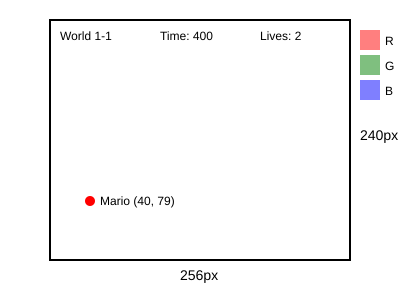
Think of it like pressing the right button for a split second, checking if you got a reward, game over or not, and returning the new state. This is a single step in the game. The interaction loop continues until the game is over or the agent beats it.
Pre-process the environment
In the previous output, the next state was a 240×256×3 image returned by the environment. Often, this is too much information for the agent to process directly — Mario doesn't need to see the entire screen to make decisions. Instead, we apply wrappers to the environment to pre-process the images and make them more manageable.
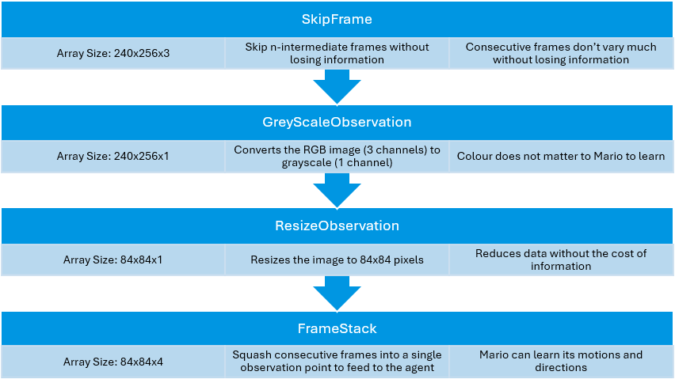
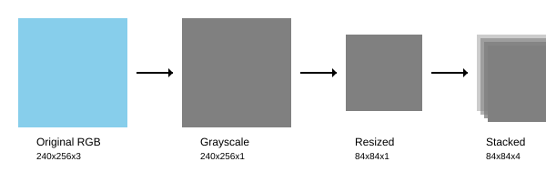
The final output is smaller by almost 85% — faster processing, less memory usage. Simpler than what a human sees, but containing the essential information needed to learn how to play the game effectively.
Replay buffer
A replay buffer is a "memory bank" that stores the agent's experiences while it plays. Each experience consists of: the current state (what Mario sees), the action taken, the reward received, the next state, and whether the game ended (the done flag). Something like this:
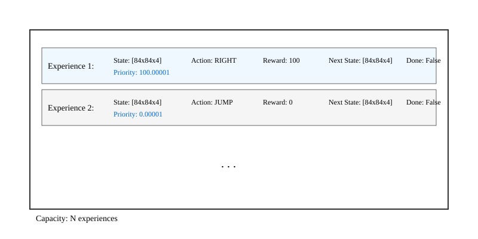
In the PyTorch tutorial, the author uses TensorDictReplayBuffer with LazyMemmapStorage — a custom replay buffer that stores experiences and samples mini-batches for training. I failed to get it running:
OSError: [WinError 1455] The paging file is too small for this operation to completeThis is a Windows-specific error that occurs when the system tries to allocate more virtual memory than is available. Since I don't want to mess with the system too much and don't have any money for RAM yet, I decided to use a simpler replay buffer implementation — SimpleReplayBuffer.
| SimpleReplayBuffer | TensorDictReplayBuffer with LazyMemmapStorage |
|---|---|
| Uses a simple Python deque for storage | More sophisticated memory management |
| Implements basic prioritised experience replay | Uses memory mapping for large datasets |
| Straightforward memory management | More complex data structures |
| Less feature-rich but more robust | More features but more potential points of failure |
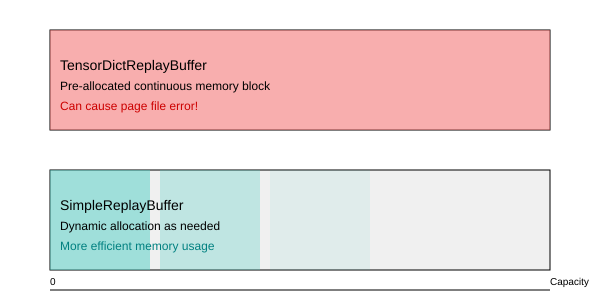
My SimpleReplayBuffer does two key things:
- push (storing experiences):
- Takes a snapshot of what happened during one step of Mario's gameplay.
- Calculates how important the memory is (
priority = |reward| + epsilon). - Stores the experience in a deque and the priority in a separate deque.
- sample (prioritised sampling):
- Mario "remembers" past experiences to learn from. Takes how many memories to recall (
batch_size) and prefers important moments (high rewards). - If picking important memories fails (due to zero probabilities), falls back to random memories.
- Converts chosen memories to a format for learning (GPU tensors).
- Mario "remembers" past experiences to learn from. Takes how many memories to recall (
Even though it's essentially the same as TensorDictReplayBuffer, the SimpleReplayBuffer is a better fit for my current setup — lightweight, easy to understand, no special dependencies, easier to debug and modify.
It's-a me, Mario!
Time to create the Mario-playing agent. Mario should be able to:
- Act according to the optimal policy (exploit) or try new things (explore) based on the current state.
- Remember experiences.
Experience = (current state, current action, reward, next state). Mario will cache and recall these to update his policy. - Learn from these experiences — updating his policy to maximise rewards over time.
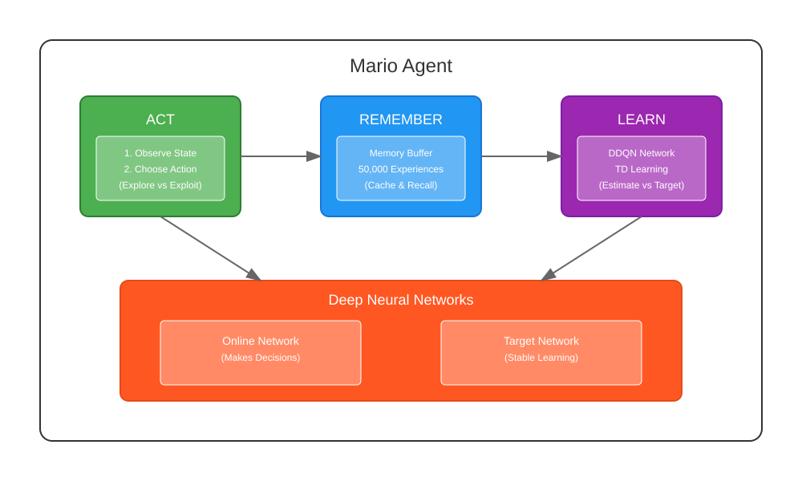
Act
def act(self, state):
"""
Given a state, choose an epsilon-greedy action and update value of step.
Inputs:
state(``LazyFrame``): A single observation of the current state, dimension is (state_dim)
Outputs:
``action_idx`` (``int``): An integer representing which action Mario will perform
"""The act function takes a state — a LazyFrame representing what Mario "sees" at a given moment — and chooses an action based on an epsilon-greedy strategy (exploit vs explore). If exploring, it picks a random action; if exploiting, it picks the best action by relying on MarioNet from the Learn section.
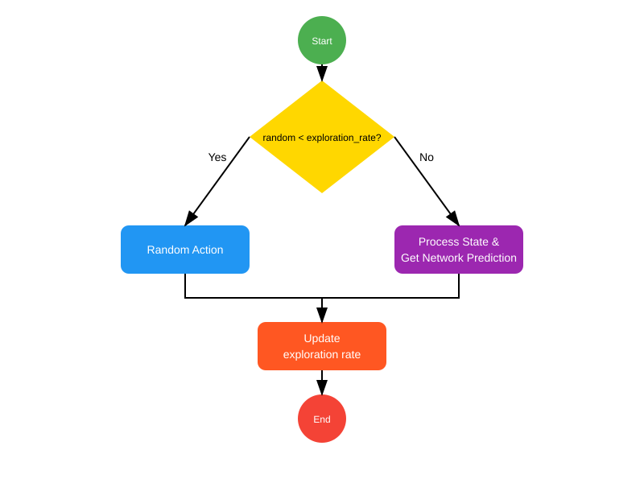
The method is called every time Mario needs to make a decision — many times per second during gameplay.
The exploration rate early on is 1, meaning Mario will explore 100% of the time early in training. Over time the rate decreases through exploration_rate_decay, so Mario explores less and is forced to exploit more. This value never goes below exploration_rate_min.
Remember (cache and recall)
def cache(self, state, next_state, action, reward, done):
"""
Store the experience to self.memory (replay buffer)
Inputs:
state (``LazyFrame``),
next_state (``LazyFrame``),
action (``int``),
reward (``float``),
done(``bool``)
"""
def recall(self):
"""
Retrieve a batch of experiences from memory
"""These two functions serve as Mario's memory bank.
The cache function stores experiences (state, next state, action, reward, done) in the replay buffer. The recall function randomly retrieves a batch of experiences from the buffer for training. This is where Mario "remembers" past experiences and uses them to learn.
Two key parameters to consider: buffer size and batch size.
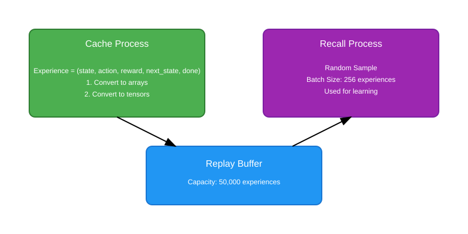
Buffer size determines how many experiences Mario can remember at once. For Mario, each level lasts around 200–300 seconds. 50,000 experiences should cover 150–250 full levels, a good starting point. With more compute, increase to remember more — diverse learning, important events not forgotten.
Batch size determines how many experiences Mario will recall for training. Larger batches mean learning from more experiences at once — more stable learning. But larger batches need more memory and compute, so it's a trade-off.
Learn
MarioNet
class MarioNet(nn.Module):
"""mini CNN structure
input -> (conv2d + relu) x 3 -> flatten -> (dense + relu) x 2 -> output
"""MarioNet defines the neural-network architecture Mario uses to learn how to play. In this instance we use Double Deep-Q Network. For clarity, this plate won't drill into the details — but know that DDQN provides more stable training, better performance, and is relatively simple to implement compared to DQN or Dueling DQN.
TD estimate and target (Temporal Difference Learning)
@torch.cuda.amp.autocast()
def td_estimate(self, state, action):
"""Compute current Q-value estimate"""
@torch.cuda.amp.autocast()
@torch.no_grad() # No gradients needed for target
def td_target(self, reward, next_state, done):
"""Compute TD target using DDQN"""In short, TD learning is about estimating the value of a state-action pair and updating that estimate based on the reward and the expected value of the next state.
- TD Estimate (current guess):
- What Mario thinks the value of the current state-action pair is.
- Comes from the online network (current knowledge).
- Like Mario saying "I think jumping here will give me X points".
- TD Target (better guess):
- What Mario should think the value is — based on immediate reward received plus estimated future value from the more stable target network.
- Comes from the target network (more accurate).
- Like a teacher saying "Actually, jumping there gave you Y points plus future possibilities".
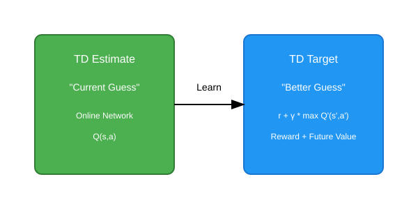
Over time, learning happens by minimising the difference — Mario's estimates get closer to reality.
Model updates (training process)
def update_Q_online(self, td_estimate, td_target):
loss = self.loss_fn(td_estimate, td_target) # How wrong was Mario?
self.optimizer.zero_grad() # Clear previous gradients
loss.backward() # Calculate gradients
self.optimizer.step() # Update network weights
return loss.item()
def sync_Q_target(self):
# Copy online network weights to target network
self.net.target.load_state_dict(self.net.online.state_dict())These functions update the online network based on the TD estimate and TD target — Mario's brain adjusting its understanding. update_Q_online calculates the loss between TD estimate and target, backpropagates to update the network weights, and returns the loss value. sync_Q_target is called occasionally to synchronise the target network with the online network by copying the weights — so the target network has the latest knowledge.
Learning loop
def learn(self):
# Important timings
if self.curr_step < self.burnin: # First 5000 steps
return None, None # Just collect experiences
if self.curr_step % self.learn_every != 0: # Every 2 steps
return None, None # Skip learning
if self.curr_step % self.sync_every == 0: # Every 5000 steps
self.sync_Q_target() # Sync target network
if self.curr_step % self.save_every == 0: # Every 500,000 steps
self.save() # Save checkpoints
# Main learning steps
state, next_state, action, reward, done = self.recall() # Get batch
td_est = self.td_estimate(state, action) # Current guess
td_tgt = self.td_target(reward, next_state, done) # Better guess
loss = self.update_Q_online(td_est, td_tgt) # LearnThe learn function is the heart of the agent's learning process. It decides when to start learning, when to skip learning, and when to synchronise the target network:
- First 5,000 steps — just collect experiences.
- Every 2 steps — skip learning.
- Every 5,000 steps — sync target network.
- Every 500,000 steps — save checkpoint.
The flow: Get Batch → Calculate Guess → Calculate Target → Update Network.
Logging
For tracking and visualising the training process, the MetricLogger class is a comprehensive logging system used to track, save, and visualise the agent's performance during training.
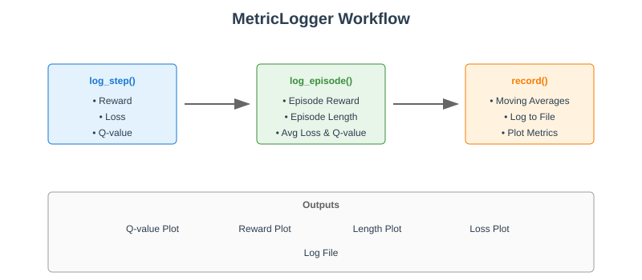
In essence, these metrics help understand the agent's learning:
- Increasing rewards indicate the agent is getting better.
- Decreasing losses show stable learning — the agent is learning from its mistakes.
- Increasing Q-values show the agent is finding better strategies.
- Episode lengths can indicate whether Mario is surviving longer or completing levels faster.
Evaluation
I made an evaluation script to watch MarioNet play. Because, after all, the goal is to see Mario beat the game by himself.
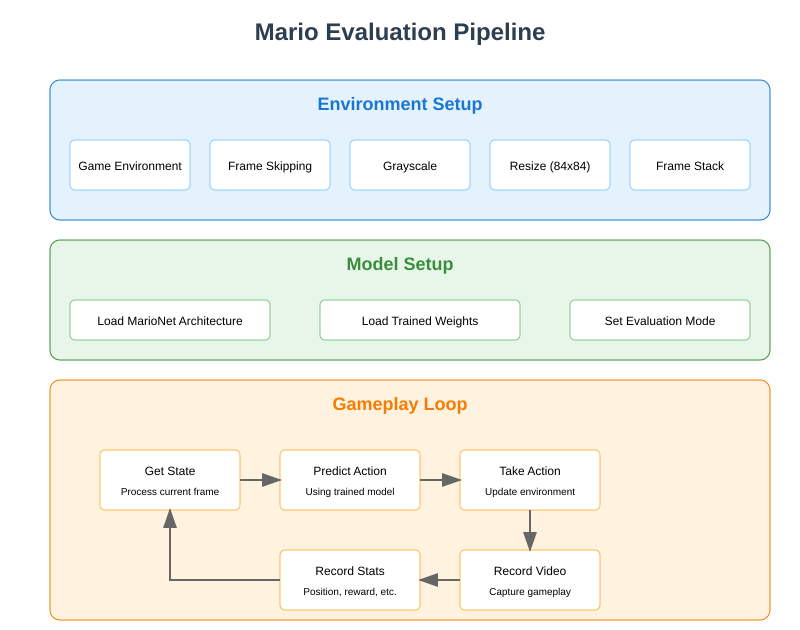
The script runs in human-visible mode (render_mode="human") and records video, making it easy to analyse the agent's behaviour.
The evaluation process is similar to training. The eval script still initialises the environment and MarioNet, but loads a checkpoint produced by the training script. Then it implements the gameplay loop, runs the Mario session played by the model, and records its performance.
Mario gameplay — recorded 17 November 2024
As you can see, he's stuck. But that's okay — it's part of the learning process. The agent will learn from these experiences and improve over time.
The script tracks several metrics to demonstrate playing styles and identify areas for improvement: total steps taken, final x-position reached, chosen actions, whether Mario reached the flag, and average speed (pixels/step).
Training process and parameter optimisation
Training a reinforcement-learning agent to play Super Mario Bros is computationally intensive. With my RTX 3060 Ti 8 GB GPU, I had to make compromises and optimisations to make training feasible. Here's what I learned from two different training approaches.
| Training approach | Results |
|---|---|
| First run — fast but limited |
|
| Second run — longer, more complex |
|
# First Run (Aggressive)
batch_size = 32 # Smaller batch size for faster learning
exploration_rate_decay = 0.99999975 # Slower decay for more exploration
gamma = 0.90 # Higher discount factor for long-term rewards
learning_rate = 0.00025 # Faster or slower learning
SimpleReplayBuffer(100000, ...) # Larger buffer for more experiences
# Second Run (Conservative)
batch_size = 256 # Larger batch size for more stable learning
exploration_rate_decay = 0.99999
gamma = 0.95
learning_rate = 0.0005
SimpleReplayBuffer(50000, ...) # Smaller buffer for less memory usageAfter messing around, here's what I concluded:
- Action-space trade-off. The 2-action model (first run) performed well — if not matching the 6-action model. For limited compute, a simpler action space might be more efficient.
- Behavioural patterns. To be observed, since both models occasionally got stuck in place — indicating incomplete learning.
- Time. The 2-action model is much faster. The 6-action model, while showing more diverse strategies, required significantly more training time to be optimal.
I'll continue experimenting with different hyperparameters and training strategies. What I have in mind is using the 2-action model trained in smaller episodes. I'll also try more extreme parameters to force the model to converge faster, since the hardware is limited.
More findings in part 2. In the meantime, you can check out this project in a concise manner or my other plates.
References
- Van Hasselt, H., Guez, A., & Silver, D. (2015). Deep Reinforcement Learning with Double Q-Learning. Proceedings of the AAAI Conference on Artificial Intelligence, 30. arxiv.org/pdf/1509.06461.pdf
- Feng, Y., Subramanian, S., Wang, H., & Guo, S. Train a Mario-playing RL Agent (PyTorch tutorial).
- OpenAI. Spinning Up in Deep RL.